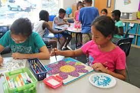

ABC Public School has widespread interest in the sphere of the quality education with the commitment to nurture the uniqueness of our students and enabling young minds to be best positioned in the different walks of life. We focus on a holistic development of all the children in order to make them contributing members of society. We, at ABC Public Schoo, strive to unleash every child's full potential in every domain.
ABC Public School, Patiala, Punjab was established in 1970 to provide education to the students. In a short span of time, the school has grown to become one of the best educational entities in the city and has built a reputation for excellence in education & been ranked among the top schools of Punjab by the Hindustan Times – C Fore Survey
About Us

For development, extra activities are also most important in student’s life. Students are pressurized during exams and they have performance pressure too of gaining good grades. In such conditions, there is a need for some extra activities. You cannot force a student to just read books and become intelligent.